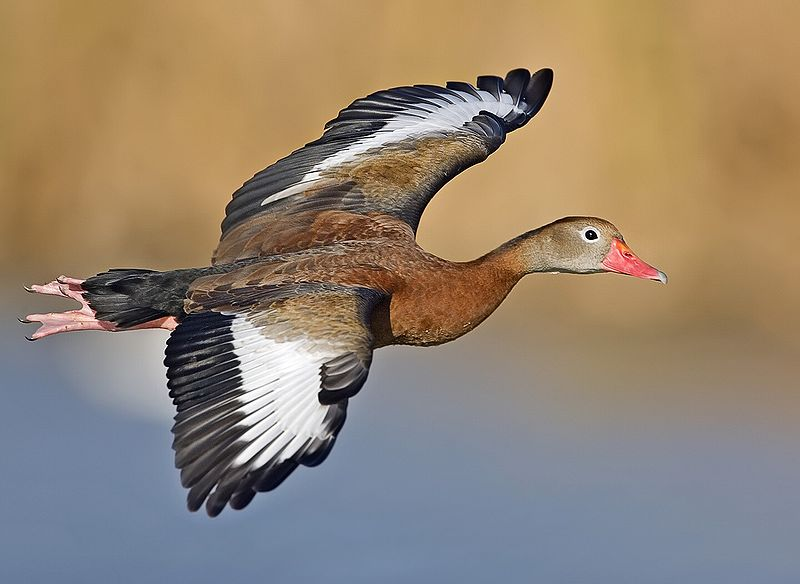
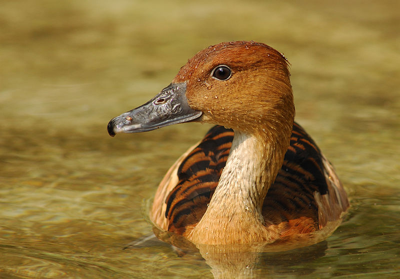
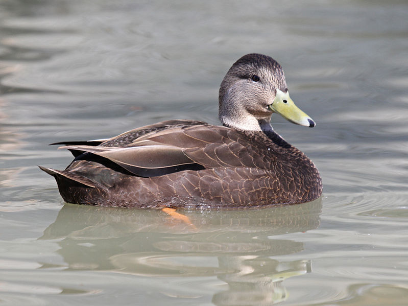

The Black-bellied Whistling Duck or Black-bellied Whistling-Duck (Dendrocygna autumnalis), formerly also called Black-bellied Tree Duck, is a whistling duck that breeds from the southernmost United States and tropical Central to south-central South America. Nulla ornare, nunc vitae blandit varius, justo magna dictum odio, at vehicula massa sem non orci. Sed vel ante at odio ullamcorper gravida vel vitae orci. Sed pretium tristique nulla a aliquet. Curabitur neque diam, bibendum eu mattis vel, consectetur vel urna.

The Fulvous Whistling Duck (Dendrocygna bicolor), is a whistling duck that breeds across the world's tropical regions in much of Central and South America, Sub-Saharan Africa, the Indian subcontinent, and the Gulf Coast of the United States.Nulla ornare, nunc vitae blandit varius, justo magna dictum odio, at vehicula massa sem non orci. Sed vel ante at odio ullamcorper gravida vel vitae orci. Sed pretium tristique nulla a aliquet. Curabitur neque diam, bibendum eu mattis vel, consectetur vel urna.
The Muscovy Duck (Cairina moschata) is a large duck native to Mexico, Central, and South America. Nulla ornare, nunc vitae blandit varius, justo magna dictum odio, at vehicula massa sem non orci. Sed vel ante at odio ullamcorper gravida vel vitae orci. Sed pretium tristique nulla a aliquet. Curabitur neque diam, bibendum eu mattis vel, consectetur vel urna.

The American Black Duck (Anas rubripes) is a large dabbling duck. Nulla ornare, nunc vitae blandit varius, justo magna dictum odio, at vehicula massa sem non orci. Sed vel ante at odio ullamcorper gravida vel vitae orci. Sed pretium tristique nulla a aliquet. Curabitur neque diam, bibendum eu mattis vel, consectetur vel urna.
 The Muscovy Duck (Cairina moschata) is a large duck native to Mexico, Central, and South America. Nulla ornare, nunc vitae blandit varius, justo magna dictum odio, at vehicula massa sem non orci. Sed vel ante at odio ullamcorper gravida vel vitae orci. Sed pretium tristique nulla a aliquet. Curabitur neque diam, bibendum eu mattis vel, consectetur vel urna.
The Muscovy Duck (Cairina moschata) is a large duck native to Mexico, Central, and South America. Nulla ornare, nunc vitae blandit varius, justo magna dictum odio, at vehicula massa sem non orci. Sed vel ante at odio ullamcorper gravida vel vitae orci. Sed pretium tristique nulla a aliquet. Curabitur neque diam, bibendum eu mattis vel, consectetur vel urna.